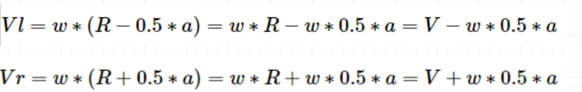
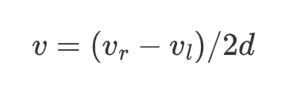

<!DOCTYPE lake>
<h2 data-lake-id="Ws3DB" data-lake-index-type="2" id="Ws3DB"><span data-lake-id="ub30ac569" id="ub30ac569">小车接收线速度和角速度</span></h2><p data-lake-id="uf182c0c3" id="uf182c0c3"><span data-lake-id="u7c3bcc19" id="u7c3bcc19">小车通过USART5接收上位机发送的线速度和角速度</span></p><h2 data-lake-id="m8q4M" data-lake-index-type="2" id="m8q4M"><span data-lake-id="ue3439956" id="ue3439956">两轮差速运动</span></h2><p data-lake-id="ufd83719d" id="ufd83719d"><span class="lake-fontsize-12" data-lake-id="ub98ccf6c" id="ub98ccf6c" style="color: rgb(51, 51, 51)">小车是一个刚体,所以轮子的每个位置角速度都是相同的, 而由于转弯半径不同,所以每个轮子的线速度会有所不同.</span></p><p data-lake-id="u1ea42fd6" id="u1ea42fd6"></p><p data-lake-id="u831ad8ae" id="u831ad8ae"><strong><span class="lake-fontsize-12" data-lake-id="u8d44991f" id="u8d44991f" style="color: rgb(51, 51, 51)">速度推导左右轮转速</span></strong></p><p data-lake-id="uf9d1b51f" id="uf9d1b51f"><span class="lake-fontsize-12" data-lake-id="uc13982d4" id="uc13982d4" style="color: rgb(51, 51, 51)">已知线速度为V,角速度为:w 那么左右轮速度应该等于多少呢?</span></p><p data-lake-id="ue9034f0a" id="ue9034f0a"></p><p data-lake-id="u338030e3" id="u338030e3"><strong><span class="lake-fontsize-12" data-lake-id="u627965f5" id="u627965f5" style="color: rgb(51, 51, 51)">左右轮转速推导速度</span></strong></p><p data-lake-id="uf02afc4d" id="uf02afc4d"><span class="lake-fontsize-12" data-lake-id="ua34ce142" id="ua34ce142" style="color: rgb(51, 51, 51)">已知左右轮的速度,我们推导当前小车前进的线速度和角速度</span></p><p data-lake-id="u5baba49f" id="u5baba49f"><span class="lake-fontsize-12" data-lake-id="uaaf55a86" id="uaaf55a86" style="color: rgb(51, 51, 51)">小车线速度公式:</span></p><p data-lake-id="uefb08c08" id="uefb08c08"></p><p data-lake-id="uf537d1dd" id="uf537d1dd"><span class="lake-fontsize-12" data-lake-id="u6410dfcd" id="u6410dfcd" style="color: rgb(51, 51, 51)">小车角速度公式:</span></p><p data-lake-id="u7490f77a" id="u7490f77a"></p><p data-lake-id="u2834092f" id="u2834092f"><strong><span data-lake-id="u8926c53f" id="u8926c53f">根据线速度和角速度计算左右轮子速度代码实现</span></strong></p><span class="yuque-card-unsupported">[codeblock]</span><h2 data-lake-id="PVZSp" data-lake-index-type="2" id="PVZSp"><span data-lake-id="u5a86469d" id="u5a86469d">pid调节左右轮子移动速度</span></h2><span class="yuque-card-unsupported">[codeblock]</span><h2 data-lake-id="DIaDz" data-lake-index-type="2" id="DIaDz"><span data-lake-id="u23a17551" id="u23a17551">控制主逻辑</span></h2><span class="yuque-card-unsupported">[codeblock]</span>